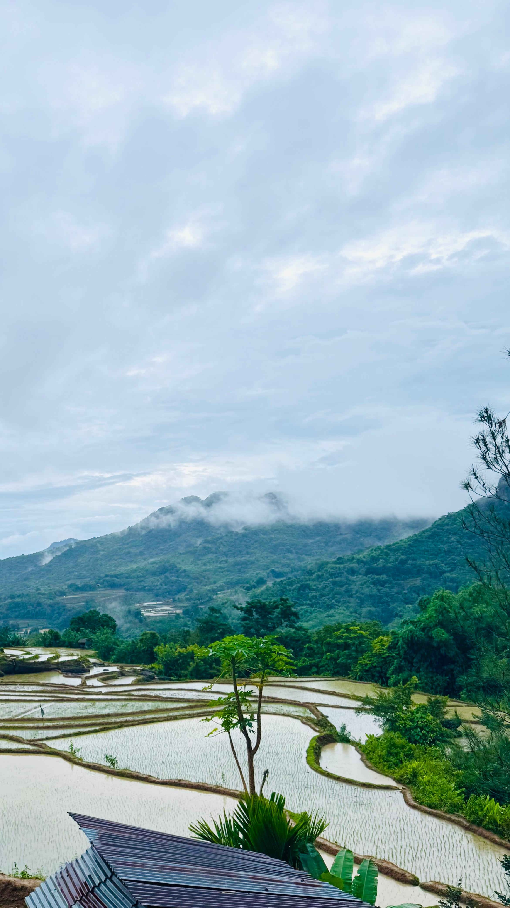
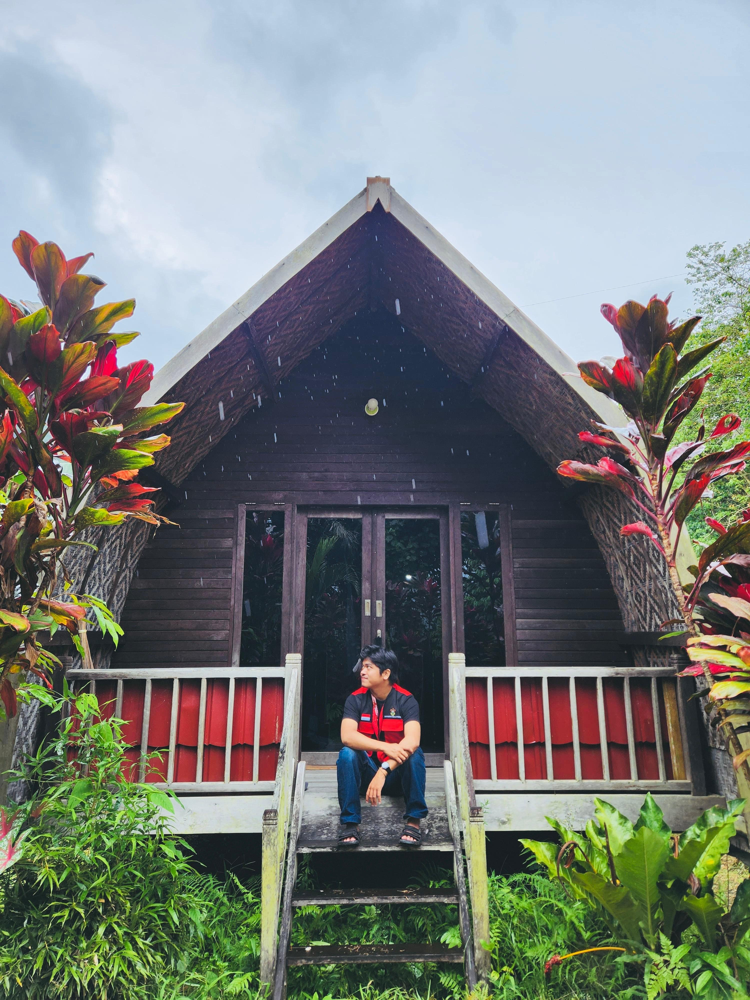
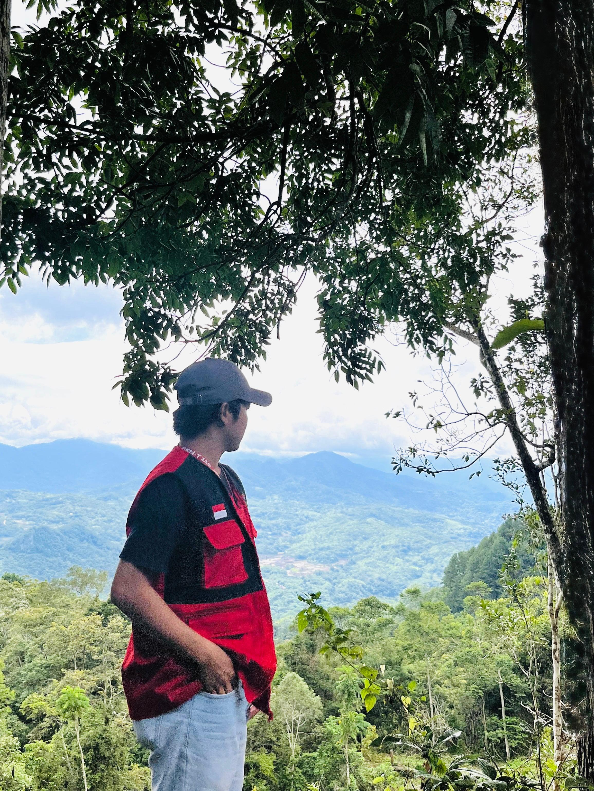
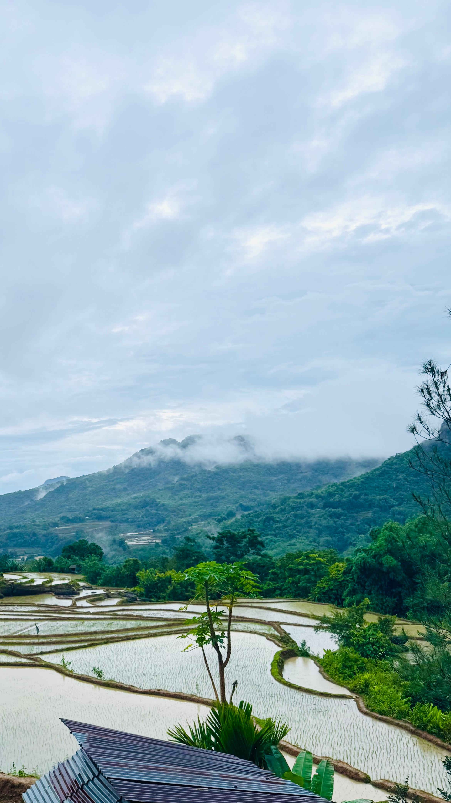
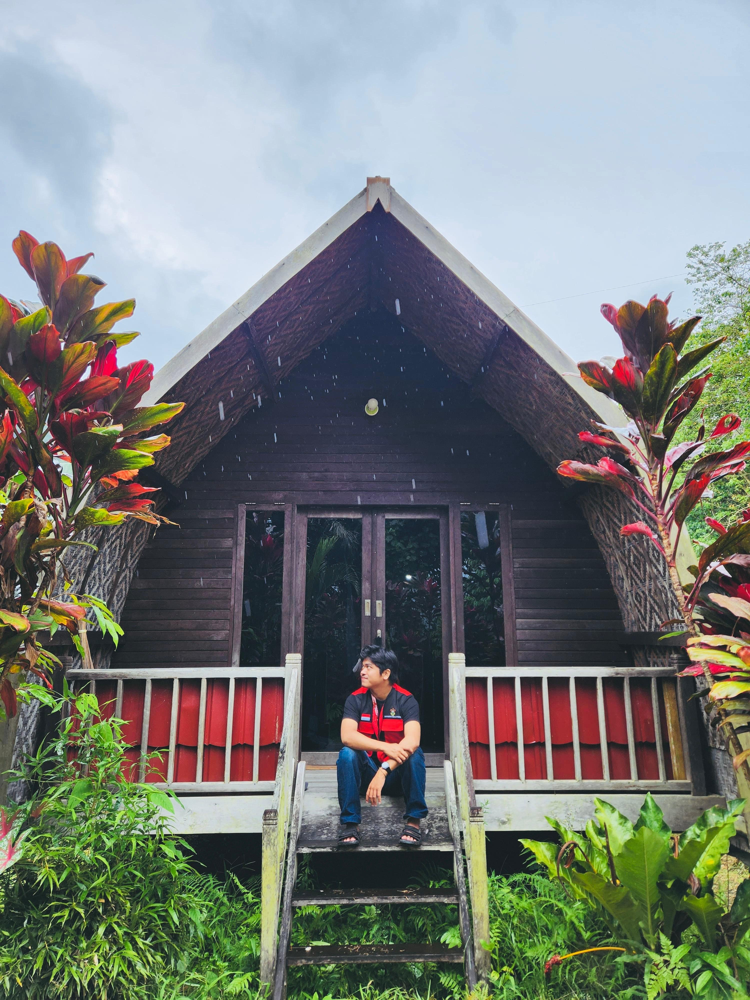
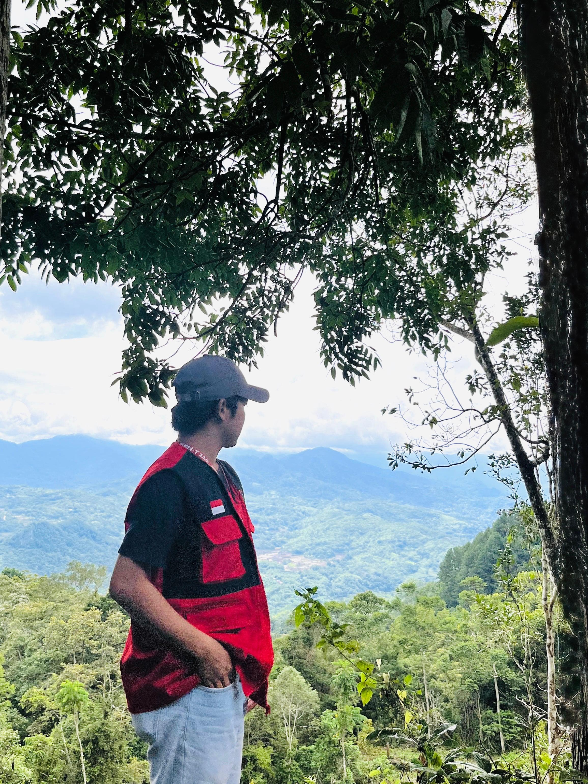
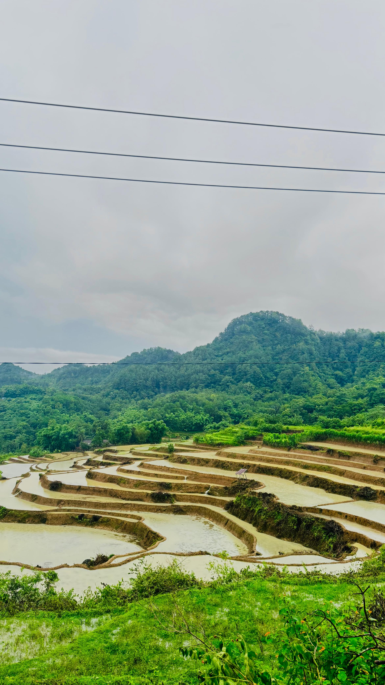
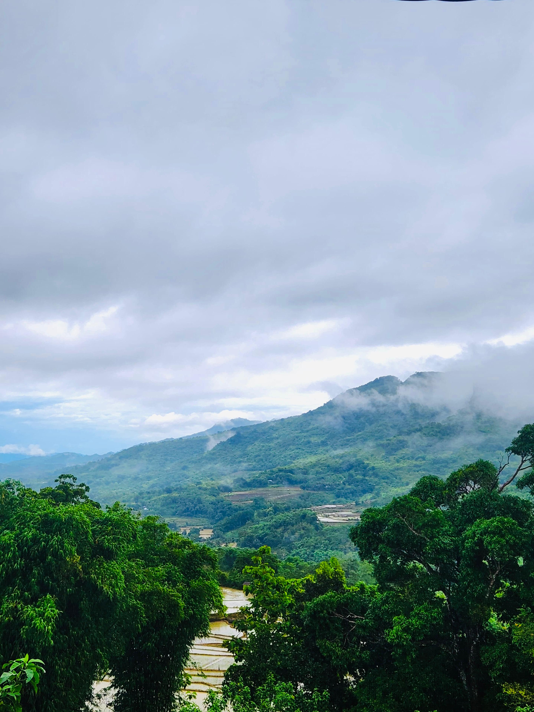
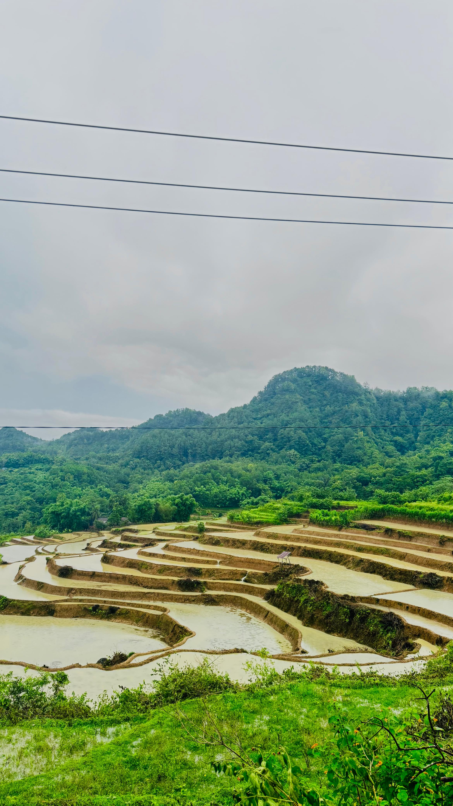
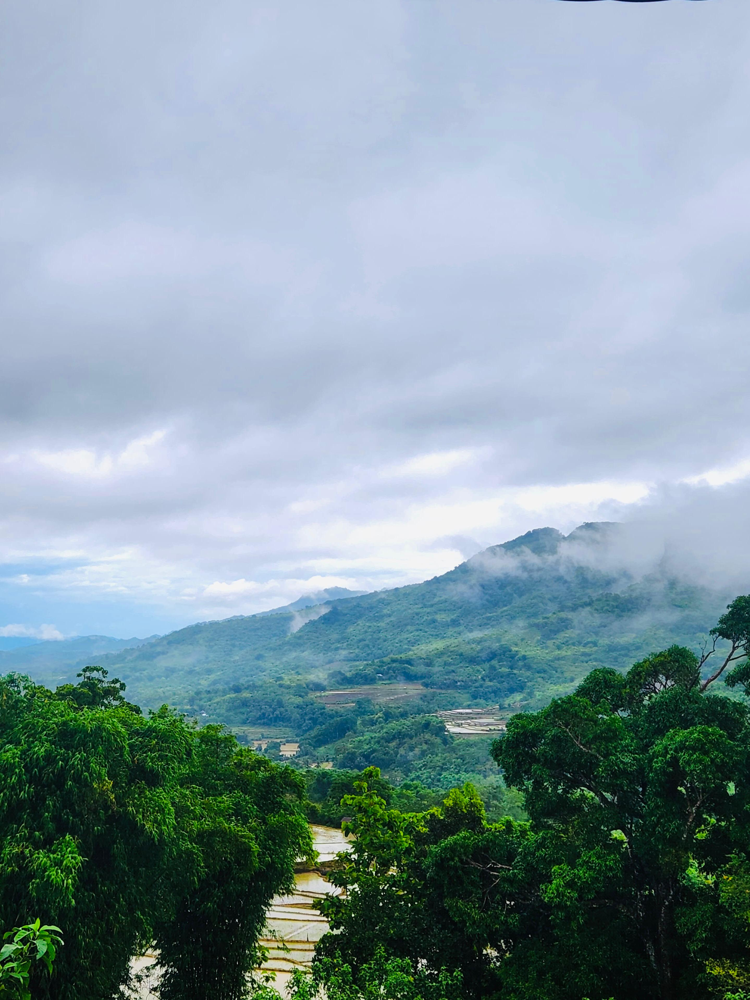

Layanan Publik & Transparansi
Memudahkan administrasi dan informasi bagi seluruh warga Desa Rompegading
Transparansi APBDes 2025
Realisasi Pendapatan dan Belanja Desa Rompegading Tahun Anggaran 2025
| Bidang Pelaksanaan | Anggaran (Rp) | Realisasi (Rp) | Persentase |
|---|---|---|---|
| Penyelenggaraan Pemerintahan | 550.000.000 | 545.000.000 | 99% |
| Pembangunan Desa | 750.000.000 | 700.000.000 | 93% |
| Pembinaan Kemasyarakatan | 120.000.000 | 115.000.000 | 95% |
| Pemberdayaan Masyarakat | 200.000.000 | 180.000.000 | 90% |
| Total | 1.620.000.000 | 1.540.000.000 | 95% |
Pengumuman Desa
-
15 Jan
Rapat Kerja Bakti Lingkungan Dusun I
-
20 Jan
Penyaluran BLT Dana Desa Tahap 1
-
25 Jan
Musyawarah Perencanaan Pembangunan Desa
Persyaratan Dokumen
Unduh format surat pengantar untuk memudahkan pengurusan administrasi:
Struktur Organisasi Pemerintah Desa Rompegading 2022-2028
Ketua BPD
Badan Permusyawaratan Desa

Arfah, S.Pd
Kepala Desa

Kaharuddin
Sekretaris Desa

Syamsuddin
KASI Pemerintahan
Klik untuk detail Staf: Winda Ahmadani
Nuramalia
KASI Kesra / Pelayanan
Klik untuk detail Staf: Erni
Nur Fadlan
KAUR Keuangan
Klik untuk detail Staf: Sulfikar
Fitriani Herman
KAUR Umum/Perencanaan
Klik untuk detail Staf: RosniaKepala Dusun
Darwis
Kadun Moncongjai
Zulkifli
Kadun Bululohe
M. Nasir
Kadun Pattiro
Marwan
Kadun Laniti Labuaja
Statistik Penduduk
Data Demografi Terkini Desa Rompegading
0
Total Penduduk
0
Kepala Keluarga
0
Laki-laki
0
Perempuan
Tentang Wisata Desa
Desa Rompegading adalah destinasi wisata unik yang terletak di Kab. Maros Ke. Cenrana. Desa ini Menawarkan suasana pegunungan yang asri dan spot foto ikonik, tempat ini mempunyai keindahan dan UMKM lokal yang menarik, selain itu tempat ini menjadi salah satu daya tarik utama di Kecamatan Cenrana, Kabupaten Maros.
 





 




Pojok UMKM Desa
Dukung ekonomi lokal dengan membeli produk unggulan Desa Rompegading

Semangka Fresh
Semangka hasil kebun petani Desa Rompegading yang manis dan segar.
Rp 25.000 / pcs Pesan via WhatsApp
Jagung Pulut
Jagung hasil petani lokal desa Rompegading, kualitas unggul.
Rp 10.000 / pcs Pesan via WhatsApp
Gula Semut
Gula semut khas Desa Rompegading, cocok untuk pemanis alami.
Rp 15.000 / butir Pesan via WhatsAppOleh-Oleh Khas Desa
Oleh-oleh khas dan kerajinan tangan asli warga Rompegading

Kopi Galung-galung
Kopi petik merah asli pegunungan Cenrana dengan aroma khas.
Rp 25.000 / pcs Beli Sekarang
Lokasi Kami
Hubungi Kami
Informasi Kontak
Alamat: Desa Rompegading, Kec. Cenrana, Maros
Email: desarompegading@gmail.com
Chat via WhatsApp